What happens when you take a weekend and cram a bus full of teens…
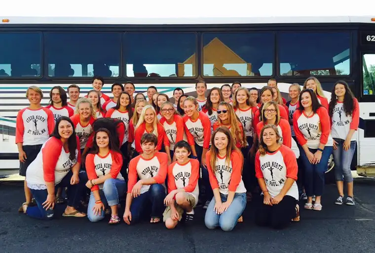
Add a visit to the largest Benedictine monastery in the world (St. John’s, Collegeville, Minn.)…
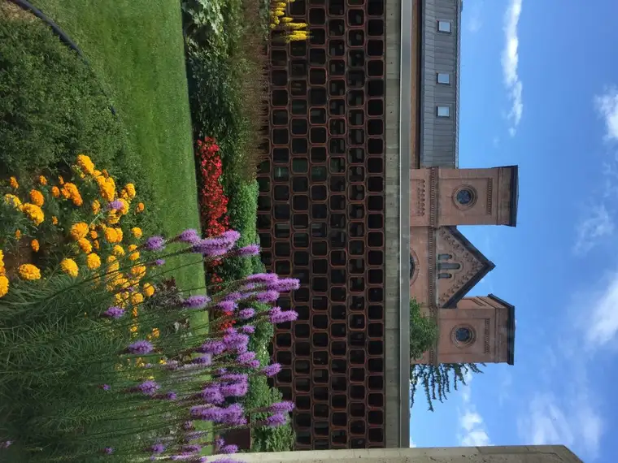
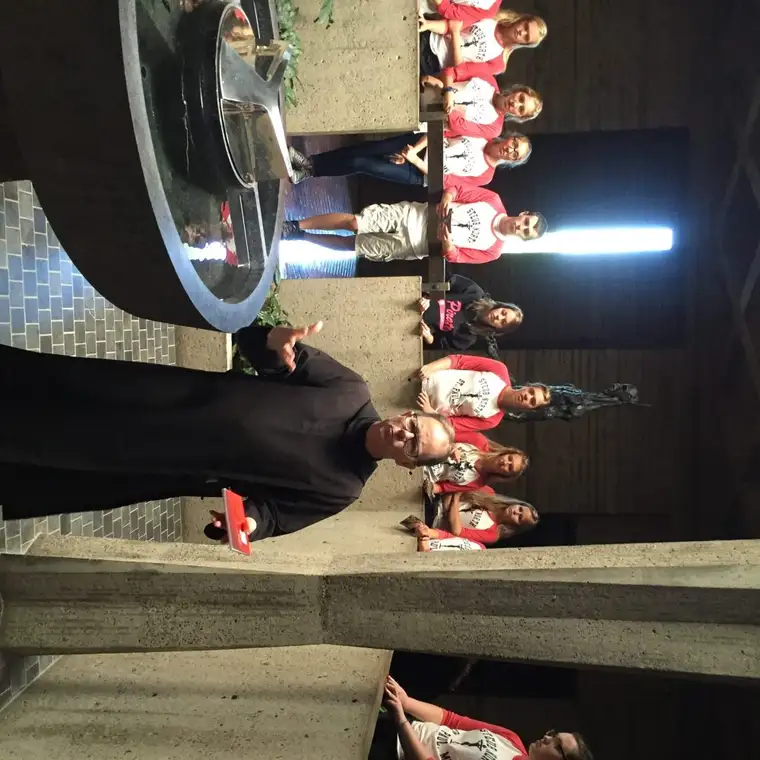
Include in that visit midday prayer with the monks…
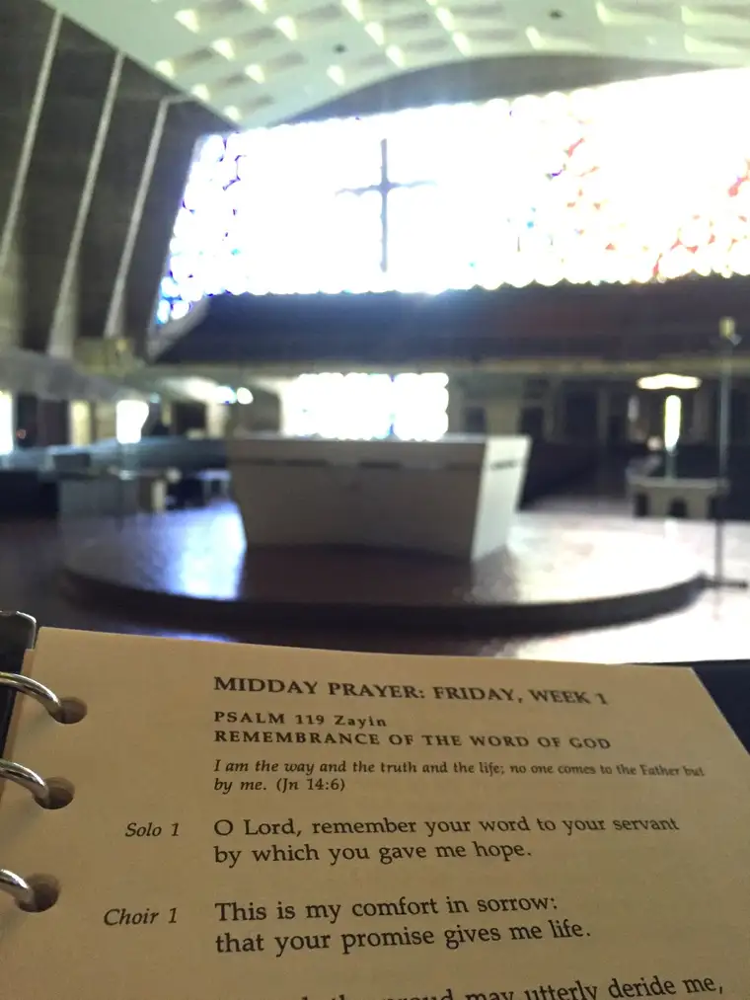

A stop by an ancient Marian shrine…

A walk around the campus…
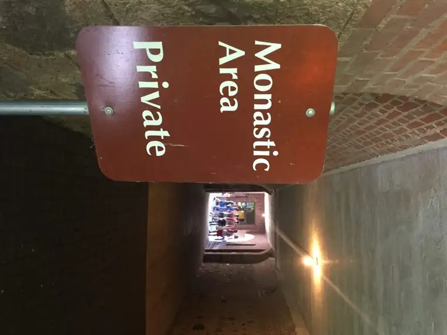
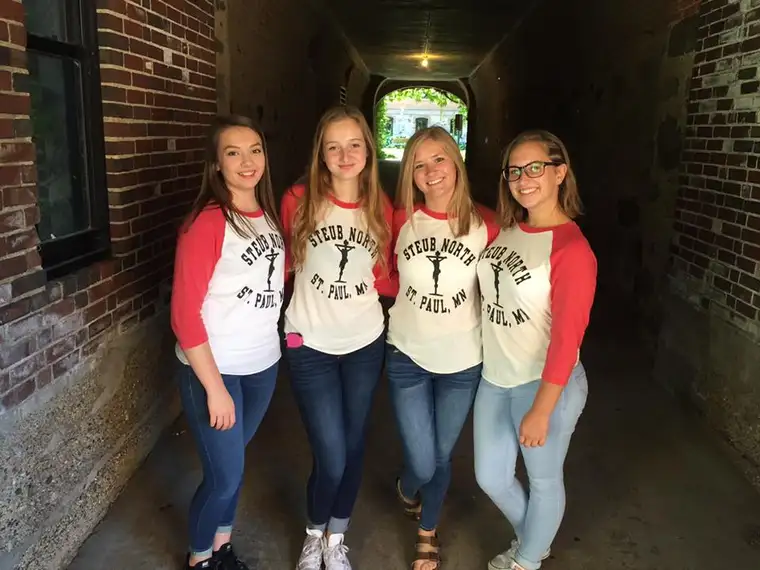
Another bus ride and visit to the Cathedral of St. Paul…


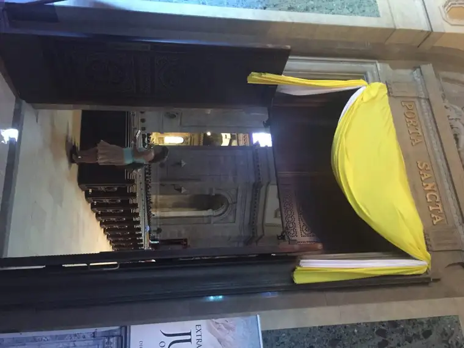
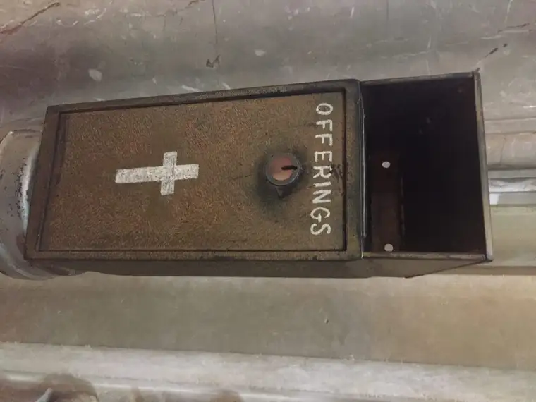
Then mix in a longer stop at the University of St. Thomas in St. Paul…
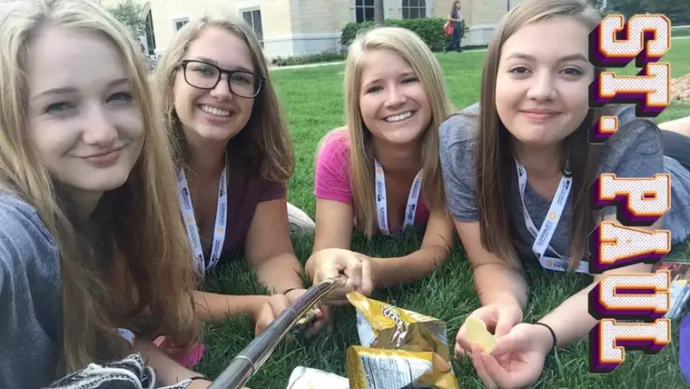
And join your teens with nearly 2,000 more (and a few nuns)…
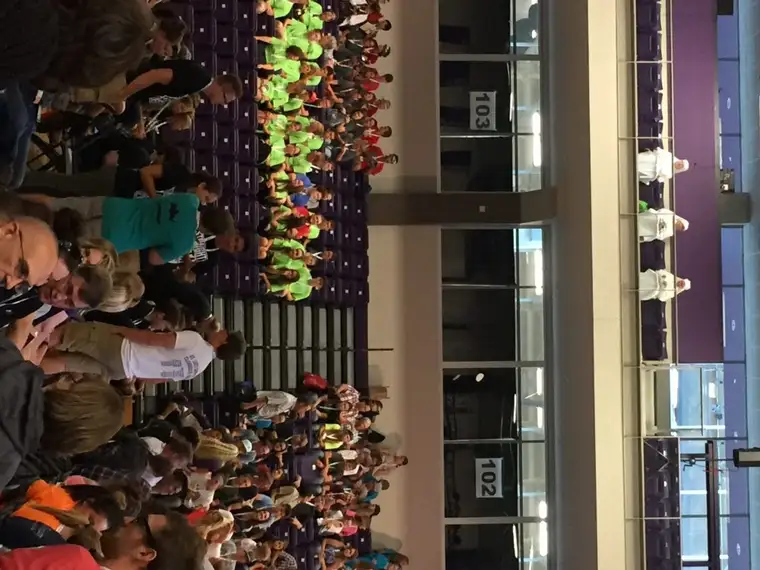
And take over the campus for a couple of days, all in the name of sparking the spirits of those young souls?
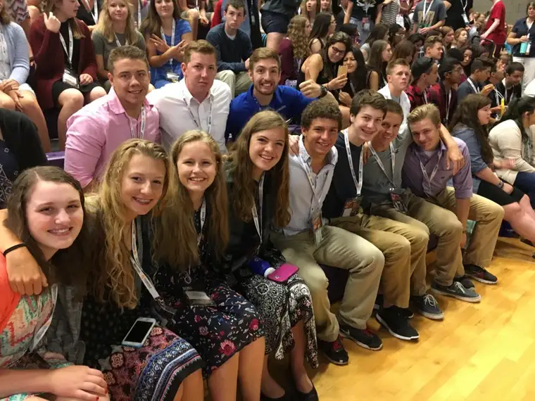
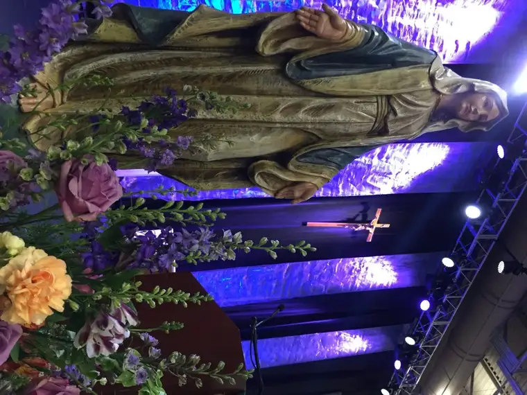
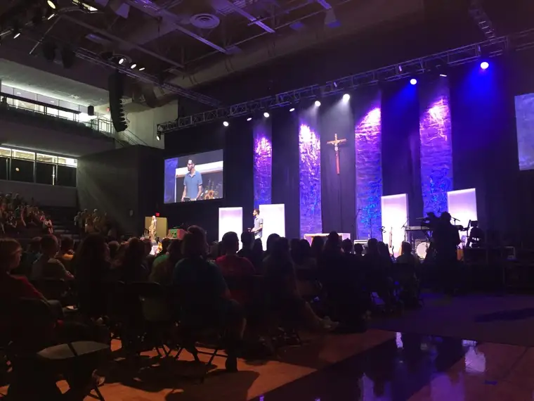
Steubenville North — or #SteubieStPaul as we used for the weekend’s social media hashtag.
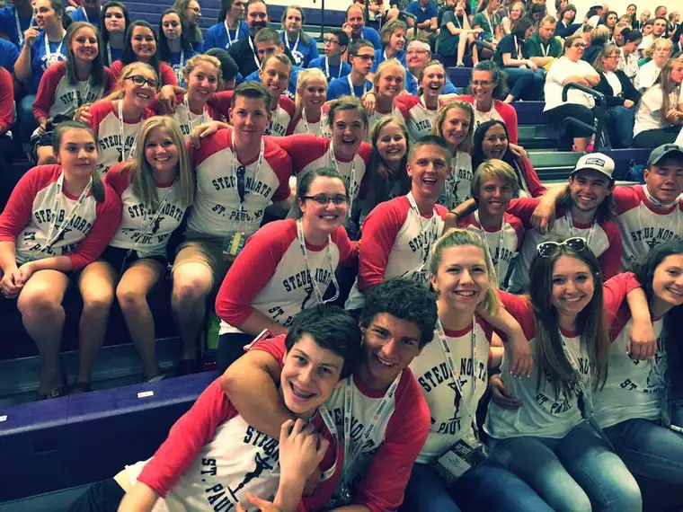
How does one describe such an experience from a chaperone’s perspective?
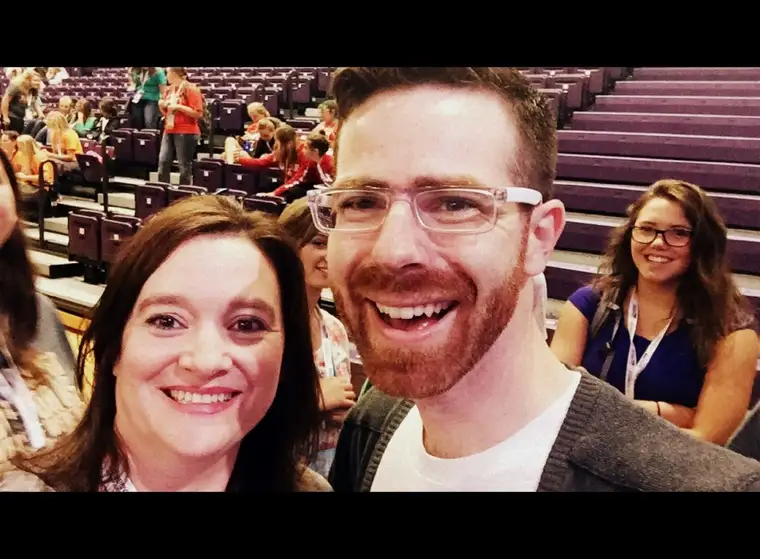
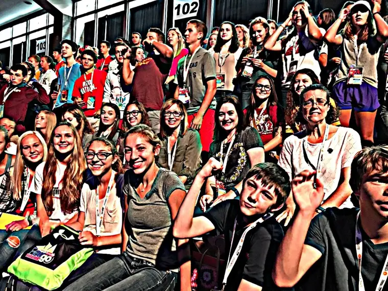
I don’t know where to begin to be honest. So much of what we took in involved a movement of the soul. No words suffice.
Perhaps a hint can be found in the whispering of our friends here, who aligned the walkway to the confessionals, where 1,300 people over the course of a couple days unloaded a backpack full of sins to start clean over and fully receive Christ.
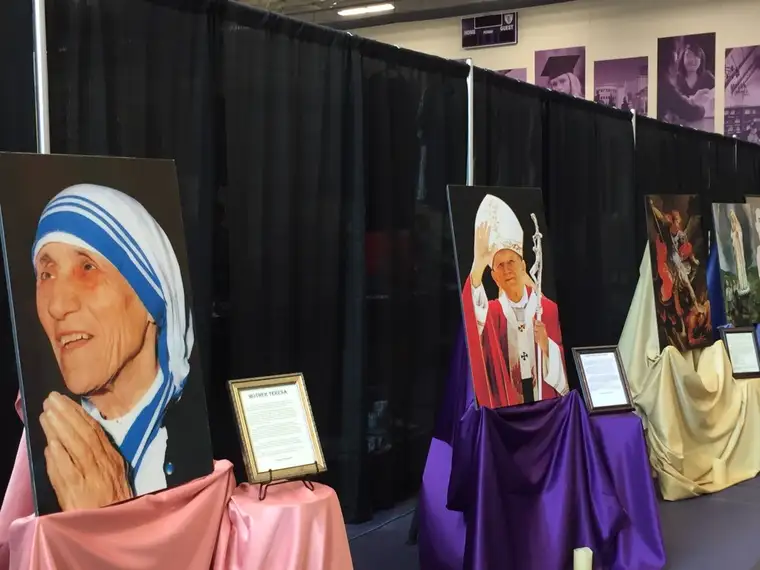

This is just a visual glimmer of the smallest proportions. Maybe something moving will more accurately depict what our weekend held in store: https://youtu.be/uK97-NYx4rw
THIS IS LIVING NOW!!!
The Lord is so good. I am so grateful to have accompanied this group and gotten pulled into the excitement of it all. We have every reason to feel hopeful about the future — a reality that becomes real when traveling with youth who’ve had an encounter with the living God. Wow!
Q4U: What energized your spirit recently?